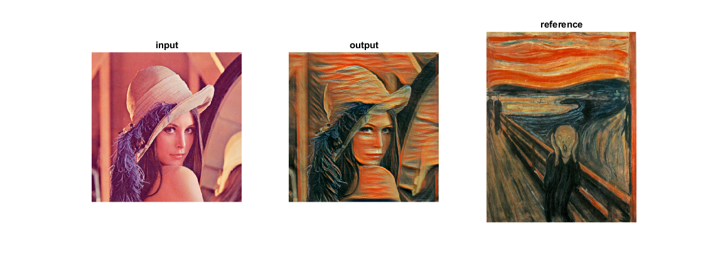

DNN: Style Transfer
Maps the artistic style of various pieces of artwork onto input image.
This demo is used to run style transfer models using OpenCV. It combines the content of one image with the style of another using convolutional neural networks.
Pretrained models are available representing several styles:
- The Muse, Pablo Picasso, 1935 https://github.com/jcjohnson/fast-neural-style/blob/master/images/styles/la_muse.jpg
- The Scream, Edvard Munch, 1893 https://github.com/jcjohnson/fast-neural-style/blob/master/images/styles/the_scream.jpg
- Udnie (Young American Girl, The Dance), Francis Picabia, 1913 https://github.com/jcjohnson/fast-neural-style/blob/master/images/styles/udnie.jpg
- The Great Wave off Kanagawa, Hokusai, 1829-1832 https://github.com/jcjohnson/fast-neural-style/blob/master/images/styles/wave.jpg
- The Starry Night, Vincent Van Gogh, 1889 https://github.com/jcjohnson/fast-neural-style/blob/master/images/styles/starry_night.jpg
- Composition VII, Wassily Kandinsky, 1913 https://github.com/jcjohnson/fast-neural-style/blob/master/images/styles/composition_vii.jpg
- Candy https://github.com/jcjohnson/fast-neural-style/blob/master/images/styles/candy.jpg
- Mosaic https://github.com/jcjohnson/fast-neural-style/blob/master/images/styles/mosaic.jpg
- Feathers https://github.com/jcjohnson/fast-neural-style/blob/master/images/styles/feathers.jpg
{kind=link}
{kind=link}
{kind=link}
{kind=link}
{kind=link}
{kind=link}
{kind=link}
{kind=link}
{kind=link}
References:
- "Perceptual Losses for Real-Time Style Transfer and Super-Resolution". Justin Johnson, Alexandre Alahi, and Li Fei-Fei. ECCV 2016. https://cs.stanford.edu/people/jcjohns/eccv16/
- "Instance Normalization: The Missing Ingredient for Fast Stylization". Dmitry Ulyanov, Andrea Vedaldi, and Victor Lempitsky. https://arxiv.org/abs/1607.08022
Sources:
input image
fname = fullfile(mexopencv.root(), 'test', 'lena.jpg'); img = cv.imread(fname, 'Color',true, 'FlipChannels',false);
load network
[net, blobOpts, ref] = StyleTransfer('the_scream');
assert(~net.empty());feed image to network
opts = parseBlobOpts(blobOpts{:});
blob = cv.Net.blobFromImages(img, blobOpts{:});
net.setInput(blob);run forward pass
tic out = net.forward(); toc
Elapsed time is 0.816851 seconds.
recover output image
out = imageFromBlob(out, opts); out = flip(out, 3); % BGR to RGB if false % use a median filter as a post-processing step out = cv.medianBlur(out, 'KSize',3); end
show results
figure('Position',get(0, 'DefaultFigurePosition').*[0.5 1 2 1]) subplot(131), imshow(flip(img, 3)), title('input') subplot(132), imshow(out), title('output') subplot(133), imshow(imread(ref)), title('reference')
Helper functions
function opts = parseBlobOpts(varargin) p = inputParser(); p.addParameter('ScaleFactor', 1.0); p.addParameter('Size', [0 0]); % [w,h] p.addParameter('Mean', [0 0 0]); % [r,g,b] p.addParameter('SwapRB', true); p.addParameter('Crop', true); p.parse(varargin{:}); opts = p.Results; end function img = imageFromBlob(blob, opts) img = permute(blob, [3 4 2 1]); % NCHW -> HWCN img = img / opts.ScaleFactor; if false && opts.SwapRB opts.Mean([1 3]) = opts.Mean([3 1]); end img = bsxfun(@plus, img, reshape(opts.Mean, 1, 1, [])); img = uint8(round(img)); end
Pretrained models
function dname = get_dnn_dir(dname) %GET_DNN_DIR Path to model files, and show where to get them if missing dname = fullfile(mexopencv.root(), 'test', 'dnn', dname); b = isdir(dname); if ~b % display help of calling function % (assumed to be a local function in current file) st = dbstack(1); help([mfilename() filemarker() st(1).name]) end assert(b, 'Missing model: %s', dname); end function [net, blobOpts, fname] = StyleTransfer(style) %STYLETRANSFER Style Transfer models [Torch] % % homepage = https://github.com/jcjohnson/fast-neural-style % % # Models from the ECCV 2016 paper % % ## Model + Weights % % file = test/dnn/StyleTransfer/eccv16/the_wave.t7 % url = https://cs.stanford.edu/people/jcjohns/fast-neural-style/models/eccv16/the_wave.t7 % hash = ae2235b7d380c346cd009418efa012453e35d089 % size = 24.3 MB % % file = test/dnn/StyleTransfer/eccv16/starry_night.t7 % url = https://cs.stanford.edu/people/jcjohns/fast-neural-style/models/eccv16/starry_night.t7 % hash = 5b5e115253197b84d6c6ece1dafe6c15d7105ca6 % size = 24.3 MB % % file = test/dnn/StyleTransfer/eccv16/la_muse.t7 % url = https://cs.stanford.edu/people/jcjohns/fast-neural-style/models/eccv16/la_muse.t7 % hash = 66a0b11a82d2b635105771ca7e7fb5b87692a51b % size = 24.3 MB % % file = test/dnn/StyleTransfer/eccv16/composition_vii.t7 % url = https://cs.stanford.edu/people/jcjohns/fast-neural-style/models/eccv16/composition_vii.t7 % hash = c3bc362a742d833c2691fb02fd7904bd73ed6632 % size = 27.0 MB % % # Models with instance normalization % (smaller and faster models without sacrificing quality) % % ## Model + Weights % % file = test/dnn/StyleTransfer/instance_norm/candy.t7 % url = https://cs.stanford.edu/people/jcjohns/fast-neural-style/models/instance_norm/candy.t7 % hash = 64cf17abf37f4b3ac6773d8524dd3ba47a4ff5c2 % size = 14.8 MB % % file = test/dnn/StyleTransfer/instance_norm/la_muse.t7 % url = https://cs.stanford.edu/people/jcjohns/fast-neural-style/models/instance_norm/la_muse.t7 % hash = cab9697c54cbc652bd5069dc734a0200d2b88f03 % size = 14.8 MB % % file = test/dnn/StyleTransfer/instance_norm/mosaic.t7 % url = https://cs.stanford.edu/people/jcjohns/fast-neural-style/models/instance_norm/mosaic.t7 % hash = f4d3e2a5e3060b3c39a9648ad009de3e09cd0001 % size = 17.5 MB % % file = test/dnn/StyleTransfer/instance_norm/feathers.t7 % url = https://cs.stanford.edu/people/jcjohns/fast-neural-style/models/instance_norm/feathers.t7 % hash = 9838007df750d483b5b5e90b92d76e8ada5a31c0 % size = 17.5 MB % % file = test/dnn/StyleTransfer/instance_norm/the_scream.t7 % url = https://cs.stanford.edu/people/jcjohns/fast-neural-style/models/instance_norm/the_scream.t7 % hash = ae36b9289cab525657b97a4ea63609c338137da7 % size = 17.5 MB % % file = test/dnn/StyleTransfer/instance_norm/udnie.t7 % url = https://cs.stanford.edu/people/jcjohns/fast-neural-style/models/instance_norm/udnie.t7 % hash = db237afe0c2a08c93bb77f63c40d0fea8191c631 % size = 10.7 MB % if false dname = get_dnn_dir(fullfile('StyleTransfer', 'eccv16')); style = validatestring(style, ... {'the_wave', 'starry_night', 'la_muse', 'composition_vii'}); else dname = get_dnn_dir(fullfile('StyleTransfer', 'instance_norm')); style = validatestring(style, ... {'candy', 'la_muse', 'mosaic', 'feathers', 'the_scream', 'udnie'}); end % load model net = cv.Net('Torch', fullfile(dname, [style '.t7'])); blobOpts = {'SwapRB',false, 'Mean',[103.939, 116.779, 123.68]}; % reference style image im = [style '.jpg']; if strcmp(style, 'the_wave'), im = 'wave.jpg'; end fname = fullfile(dname, im); if exist(fname, 'file') ~= 2 disp('Downloading style image...') url = 'https://github.com/jcjohnson/fast-neural-style/raw/master/images/styles/'; urlwrite([url im], fname); end end